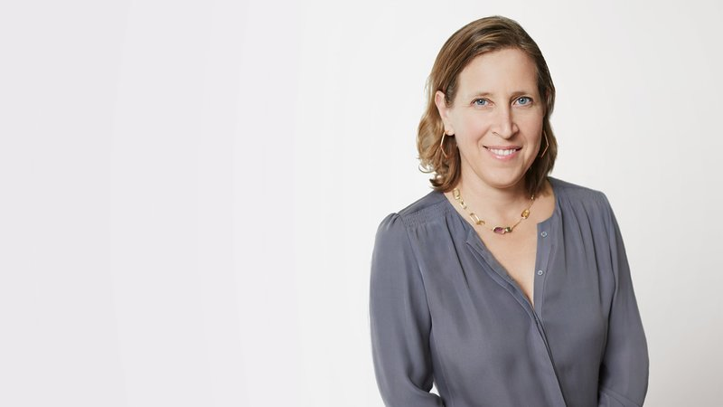
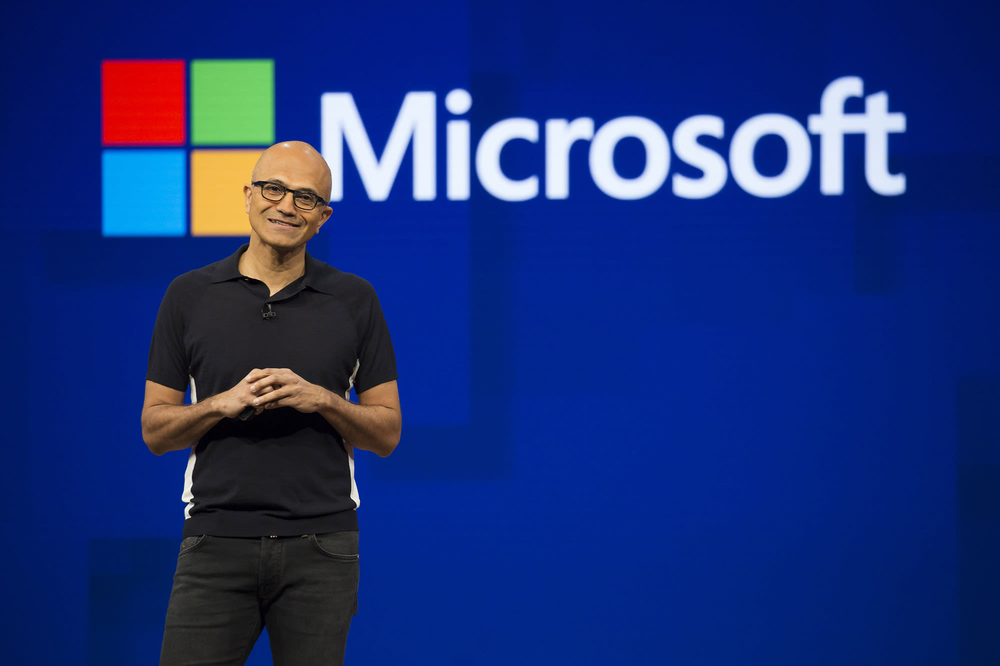

History of TechCon
TechCon was founded in 2005 with the aim of bringing together innovators and leaders in the tech industry to share their insights and experiences.
Over the years, TechCon has grown from a small gathering to a global event attracting thousands of attendees. It has been a platform for groundbreaking announcements and inspiring talks.

Our Mission
The mission of TechCon is to foster innovation, collaboration, and education within the tech community. We aim to create an environment where ideas can flourish and technology can be used to improve lives.
Past Speakers
Elon Musk

Elon Musk, CEO of SpaceX and Tesla, shared his vision for the future of space exploration at TechCon 2019.
Susan Wojcicki

Susan Wojcicki, CEO of YouTube, discussed the evolving landscape of digital media at TechCon 2020.
Satya Nadella

Satya Nadella, CEO of Microsoft, emphasized the importance of cloud computing in modern technology during TechCon 2021.